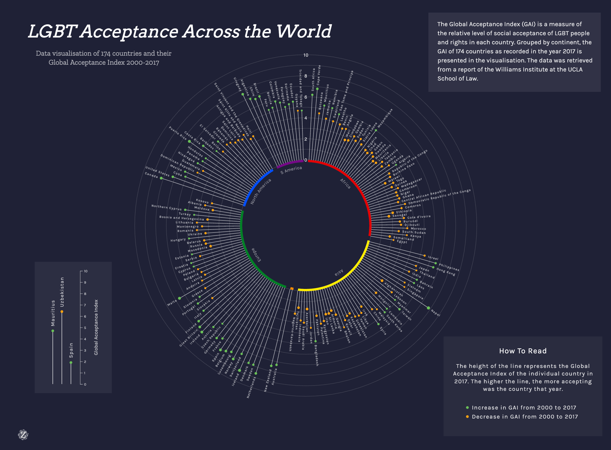
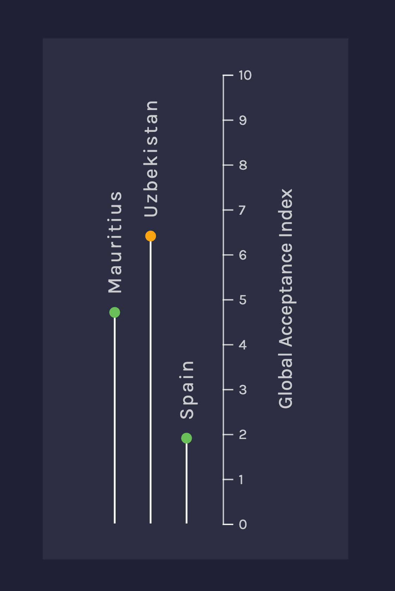
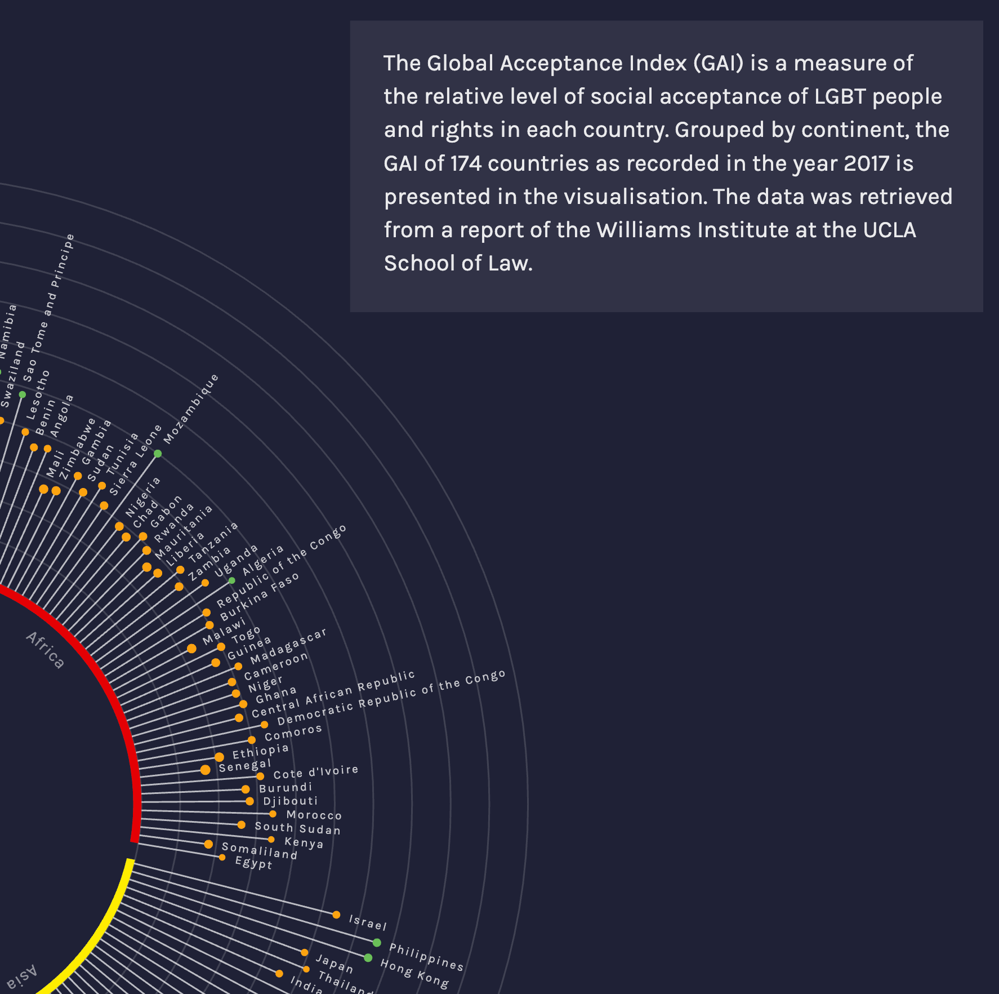
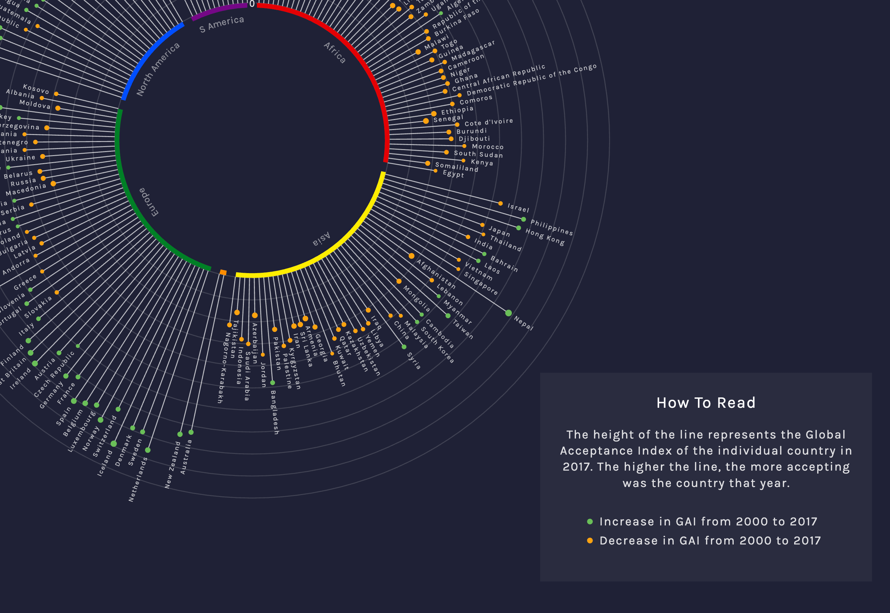

LGBT Data Visualisation
The following is the first project I made using D3.js and a brief story of what I learned on the road to making it.

After learning about data visualisation, seeing how powerful D3 is and the impeccable graphics that can be done with it,
I've felt compelled to learn it right away. But I didn't want to make just a simple chart with random data and no particular
meaning to me - I wanted to make a visualisation about an issue I'm passionate about. It just so happens that June (I was starting
to learn D3 in May) is Pride Month, which was a perfect opportunity to make a LGBTQIA+ themed visualisation.
In the project I wanted to highlight the developments regarding the acceptance of the LGBTQIA+ community and the pitfalls, too. The recent increasing negative attitude towards the community is worrying, especially in countries that seemed to show progress in the recent years. I wanted to explore and compare the different countries' stances on the issue.
It took me a while to find the right dataset, eventually settling on Williams Institute of UCLA School of Law's report on Social Acceptance of LGBT People in 174 Countries, which upon analysing survey data produced the Global Acceptance Index - a measure of the relative level of social acceptance of LGBT people and rights in each country. Prior to my project, I didn't have any experience with data scraping, wrangling or any detailed data analysis, so I wasn't particularly happy to find the data available solely in tables in PDF appendices. But nevertheless, I've manually copied all the data to an Excel spreadsheet and turned it into a CSV file. Looking back now, there is definitely a faster and easier way to achieve that, but back then learning all different ways of handling data would have only slowed me down and I wanted to go straight down to business - making the actual visualisation.
I could have gone with a simple bar or line chart, but as expected for me, I had a different vision, which turned out to require much more customisation of the functions available in D3. I set out to make a version of a circular bar chart or better - a circular lollipop chart. After playing around with the donut chart, arcs, band and radial scales, a repeating problem emerged. I wanted to group the countries by continent and display those around the circle, since having the option to compare specific continents by their Acceptance Indices seems to offer important and interesting insight into LGBTQIA+ acceptance. After playing around a bit more, which actually involved some data wrangling with D3, looking around multiple forums and with much trial and error, the chart looked like I envisioned it. The last step was adding colour - as per the pride theme, the colour choice was obvious. Here is the final result.
In the project I wanted to highlight the developments regarding the acceptance of the LGBTQIA+ community and the pitfalls, too. The recent increasing negative attitude towards the community is worrying, especially in countries that seemed to show progress in the recent years. I wanted to explore and compare the different countries' stances on the issue.
It took me a while to find the right dataset, eventually settling on Williams Institute of UCLA School of Law's report on Social Acceptance of LGBT People in 174 Countries, which upon analysing survey data produced the Global Acceptance Index - a measure of the relative level of social acceptance of LGBT people and rights in each country. Prior to my project, I didn't have any experience with data scraping, wrangling or any detailed data analysis, so I wasn't particularly happy to find the data available solely in tables in PDF appendices. But nevertheless, I've manually copied all the data to an Excel spreadsheet and turned it into a CSV file. Looking back now, there is definitely a faster and easier way to achieve that, but back then learning all different ways of handling data would have only slowed me down and I wanted to go straight down to business - making the actual visualisation.
I could have gone with a simple bar or line chart, but as expected for me, I had a different vision, which turned out to require much more customisation of the functions available in D3. I set out to make a version of a circular bar chart or better - a circular lollipop chart. After playing around with the donut chart, arcs, band and radial scales, a repeating problem emerged. I wanted to group the countries by continent and display those around the circle, since having the option to compare specific continents by their Acceptance Indices seems to offer important and interesting insight into LGBTQIA+ acceptance. After playing around a bit more, which actually involved some data wrangling with D3, looking around multiple forums and with much trial and error, the chart looked like I envisioned it. The last step was adding colour - as per the pride theme, the colour choice was obvious. Here is the final result.


